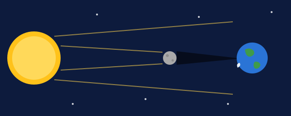

Sonne, Erde und Mond
Mit einem KI-Tutor lernen
Ein KI-Tutor erklärt dir diese Seite und hilft dir bei den Übungen. Wähl deinen Assistenten:
Mit Claude öffnen Mit ChatGPT öffnen Mit Mistral Vibe öffnen
Du nutzt dein eigenes Konto beim Anbieter. Der Assistent ist kein Angebot von lernapps.net: lernapps liefert nur Inhalte und Übungen. Die Wahl gilt für alle Seiten, nur auf diesem Gerät.
Überblick
Sonne, Erde und Mond bewegen sich ständig umeinander. Daraus entstehen Tag und Nacht, das Jahr, die Mondphasen und die Finsternisse. Auf dieser Seite lernst du, wie diese Dinge zusammenhängen. So erkennst du in einer Aufgabe schnell, welche Aussage nicht stimmen kann.
Das solltest du wissen
- Stern
Ein Stern ist ein riesiger Ball aus heißem Gas, der selbst leuchtet. Die Sonne ist ein Stern, und zwar der, der der Erde am nächsten ist.
Die Sonne ist viel größer als die Erde: Der Durchmesser der Erde passt etwa 109-mal in den der Sonne. Sie ist im Mittel rund 150 Millionen Kilometer von uns entfernt. Ihr Licht braucht für diesen weiten Weg ungefähr 8 Minuten und 19 Sekunden. Wenn du heute die Sonne siehst, ist ihr Licht also gut 8 Minuten alt.
- Mond
Der Mond ist der natürliche Begleiter der Erde und umkreist sie. Er leuchtet nicht selbst, sondern wird von der Sonne angestrahlt.
Tag und Jahr. Die Erde dreht sich einmal am Tag um ihre eigene Achse. Dabei zeigt immer ein anderer Teil zur Sonne: So entstehen Tag und Nacht. Ein ganzes Jahr braucht die Erde, um einmal um die Sonne zu kreisen (gut 365 Tage).
| Was passiert? | Wie lange? | Was entsteht daraus? |
|---|---|---|
| Die Erde dreht sich um ihre Achse | 1 Tag | Tag und Nacht |
| Die Erde umkreist die Sonne | 1 Jahr | ein Jahr |
| Der Mond durchläuft alle Phasen | etwa 29,5 Tage | ein Zyklus von Neumond zu Neumond |
Mondphasen. Die Sonne beleuchtet immer genau die Hälfte des Mondes. Wie viel von dieser hellen Seite wir sehen, hängt davon ab, wo der Mond auf seiner Bahn um die Erde gerade steht. Der Mond selbst verändert sich dabei nicht.
- Neumond: Der Mond steht zwischen Erde und Sonne. Uns zeigt sich seine dunkle Seite.
- Zunehmender Mond: Die helle Fläche wird größer. Beim ersten Viertel ist die Hälfte hell.
- Vollmond: Der Mond steht auf der anderen Seite der Erde. Wir sehen die ganze helle Seite.
- Abnehmender Mond: Die helle Fläche wird kleiner. Beim letzten Viertel ist wieder die Hälfte hell.
Eselsbrücke für die Nordhalbkugel
Das Zeichen ) steht für den zunehmenden Mond, das Zeichen ( für den abnehmenden. Das gilt bei uns im Norden. Auf der Südhalbkugel ist es umgekehrt.

Die Zeichnung ist nicht maßstabsgetreu. Sieh dir an, in welcher Reihenfolge die drei Körper stehen und wohin der Schatten fällt.
Quelle: eigene Zeichnung. Lizenz: CC-BY-4.0.Finsternisse. Bei einer Sonnenfinsternis steht der Mond zwischen Sonne und Erde. Das geht nur bei Neumond. Sein Schatten fällt dann auf die Erde. Bei einer Mondfinsternis liegt die Erde zwischen Sonne und Mond, und der Mond wandert durch den Schatten der Erde. Das geht nur bei Vollmond. Nicht bei jedem Neumond und jedem Vollmond gibt es eine Finsternis, denn die Bahn des Mondes ist ein wenig gegen die Bahn der Erde geneigt.
| Frage | Sonnenfinsternis | Mondfinsternis |
|---|---|---|
| Mondphase | Neumond | Vollmond |
| Wer steht in der Mitte? | der Mond | die Erde |
| Wessen Schatten fällt wohin? | Der Schatten des Mondes fällt auf die Erde. | Der Schatten der Erde fällt auf den Mond. |
| Wo sieht man sie? | Total nur in einem schmalen Streifen der Erde. | von der ganzen Nachtseite der Erde |
Vorsicht beim Hinsehen
Schau bei einer Sonnenfinsternis nie ohne Schutz in die Sonne. Das kann die Augen dauerhaft schädigen. Normale Sonnenbrillen reichen nicht, nötig ist eine Finsternisbrille.
So gehst du bei einer Frage vor
Frage: Welche Aussage ist falsch? A: Der Mond leuchtet nicht selbst. B: Bei Vollmond sehen wir die ganze helle Seite des Mondes. C: Bei Neumond steht die Erde zwischen Sonne und Mond.
Schritt 1: Gesucht ist die falsche Aussage. Die anderen beiden stimmen. Schritt 2: A prüfen. Der Mond wird von der Sonne angestrahlt. A stimmt. Schritt 3: B prüfen. Bei Vollmond steht die Erde zwischen Sonne und Mond, und wir sehen die ganze helle Seite. B stimmt. Schritt 4: C prüfen. Bei Neumond steht der Mond zwischen Erde und Sonne, nicht die Erde. C ist falsch und damit die Antwort.
Übung
Übung
Lösung
Die Sonne ist ein Stern.
Das stimmt. Die Sonne ist der Stern, der der Erde am nächsten ist.
Das Licht der Sonne braucht gut 8 Minuten bis zur Erde.
Das stimmt. Die Sonne ist rund 150 Millionen Kilometer entfernt, und das Licht braucht dafür 8 Minuten und 19 Sekunden.
Die Sonne ist ein Planet, der die Erde umkreist. richtige Antwort
Das ist falsch. Die Sonne ist ein Stern. Die Erde ist der Planet, der die Sonne umkreist.
Die Sonne ist ein Stern und leuchtet selbst. Die Erde kreist um die Sonne, nicht umgekehrt.
Mehr dazu:
Übung
Lösung
Richtige Antwort: 8 Minuten (erlaubte Abweichung: 1 Minuten)
Die Sonne ist im Mittel etwa 150 Millionen Kilometer entfernt. Das Licht braucht für diese Strecke 8 Minuten und 19 Sekunden.
Mehr dazu:
Übung
Lösung
Die Erde dreht sich einmal am Tag um ihre eigene Achse. richtige Antwort
Dabei wird immer ein anderer Teil der Erde von der Sonne beleuchtet.
Die Erde umkreist die Sonne.
Dafür braucht die Erde ein ganzes Jahr. Das erklärt das Jahr, nicht den Wechsel von Tag und Nacht.
Der Mond schiebt sich vor die Sonne.
Das passiert nur bei einer Sonnenfinsternis und nur selten und kurz. Tag und Nacht gibt es jeden Tag.
Die Erde dreht sich in einem Tag einmal um sich selbst. Für einmal um die Sonne braucht sie ein Jahr.
Mehr dazu:
Übung
Lösung
Richtige Antwort: Die Aussage stimmt.
Bei einer Mondfinsternis wandert der Mond durch den Schatten der Erde. Das geschieht bei Vollmond. Steht der Mond zwischen Sonne und Erde, ist es eine Sonnenfinsternis.
Mehr dazu:
Übung
Lösung
Richtige Antwort: 1. Neumond, 2. zunehmender Halbmond (erstes Viertel), 3. Vollmond, 4. abnehmender Halbmond (letztes Viertel)
Nach Neumond nimmt der Mond zu, beim ersten Viertel ist die Hälfte hell, bei Vollmond die ganze Scheibe. Danach nimmt er wieder ab. Ein Zyklus dauert etwa 29,5 Tage.
Mehr dazu:
Übung
Lösung
Richtige Antwort: C – Sonne; A – Mond; B – Schatten des Mondes; D – Erde
Die Sonne ist der große, leuchtende Ball. Der kleine graue Ball steht zwischen ihr und der Erde, das ist der Mond. Sein Schatten fällt auf die Erde. So sieht eine Sonnenfinsternis aus.
Mehr dazu: